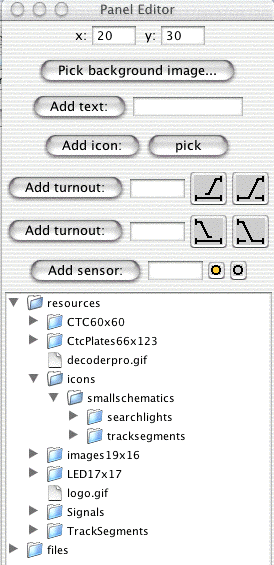

The
JMRI libraries
contain a rudimentary system for creating control panels.
Contents of a panel
Clicking on a turnout symbol flips it from closed to thrown and vice-versa.
A turnout also has "unknown" and "inconsistent" states, represented by an
icon with a question mark and X respectively. These represent a state where
no information has been received, and where the information is internally inconsistent
(e.g. both closed and thrown at the same time).
"Sensors" can be used to represent occupancy indicators or other inputs. The default icon
is a small circle, with color used to represent the state of the sensor. In the example
above there are seven sensors being driven by occupancy indicators.
Clicking on a sensor causes the sensor to alternate between "active" and "inactive"
states. With the default icons, active is a green circle and inactive is an empty circle.
These are meant to represent a lit/dark panel indicator. A red circle represents the
"unknown" state, used when no information has yet been received from the layout.
Creating a panel
These are made with a "Panel Editor", which allows you to place images
to represent turnouts, sensors (on some systems) and trackwork.
You start the editor by selecting "New panel..." from the "Panel" menu
in the JmriDemo program. You'll get a blank control panel, plus the
editor window:

From the top, this contains:
Two text fields specifying where (in pixels) new components will be inserted on the panel.
You can generally ignore these, as once the components has been inserted you can drag it around by
holding the meta (Apple, command, etc) key down.
A button to pick a background image. The editor's drawing capability is rudimentary
and likely to stay that way for a long time. To create CTC panels, complex track diagrams, etc,
its easier to draw them in some other program and insert them as the background image
for a JMRI control panel. When you click this button, you'll be prompted for the file to
use. GIF and JPG formats (and perhaps others) will work.
A button to add a text label. Put the desired text in the field and click the button. You can
slide the label around after inserting it, but you currently can't edit the text later.
A button to add an icon as a label. This is a way to add track symbols, etc. To select the
icon, use the tree in the bottom of the window (see below for details), then click the "pick" button
to load the selected icon. This is a general mechanism: Any icon on the editor window
can be replaced by selecting the desired new one and clicking on the icon to replace.
Two sections for adding left- and right-bound turnouts. These actually work the same
way, only with different icons to represent the states of the turnouts. Enter the turnout number
(e.g. 23) and click "Add turnout:". If you'd prefer a different graphic for the closed
and thrown states, you can change their icons as described above.
A section for adding a sensor. Note that only LocoNet currently has sensors implemented.
Type the sensor number (e.g. 74) in the field and click "Add sensor:".
The tree of available icons, see below.
After getting the panel the way you want, you can use the "Store panel..." entry in the "Panels" menu
to write it to an XML file.
Icons
The panel editor is icon based. The JMRI library contains lots of contributed icons
for representing CTC panels, LEDs, etc. You can browse through them with the tree
in the bottom of the editor frame. Perhaps the best way to see what each looks like
is to select it in the tree, then click on the icon next to the "Add icon" button. That
will load it.
We do need to do a better job of organizing those...
Acknowledgements
Many people
have contributed, and we thank
all of them.
Site hosted by:
Bob Jacobsen
jake@physics.berkeley.edu